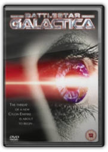
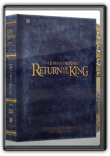
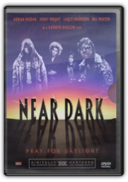
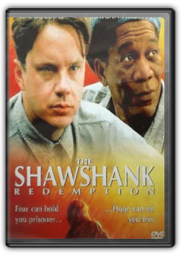
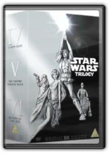
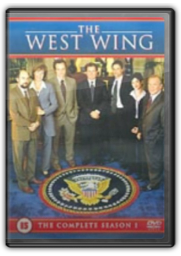
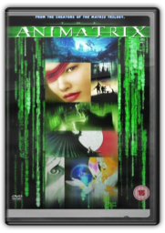
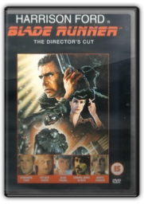

Battlestar Galactica - The Mini Series [2004]
Despite voluminous protest and nitpicking criticism from loyal fans of the original TV series (1978-80), the 2003 version of Battlestar Galacticaturned out surprisingly well for viewers with a tolerance for change. Originally broadcast on the Sci-Fi Channelin December 2003 and conceived by Star Trek: The Next Generationalumnus Ronald D Moore as the pilot episode for a "reimagined" TV series, this four-hour mini series reprises the basic premise of the original show while giving a major overhaul to several characters and plot elements. Gone are the flowing robes, disco-era hairstyles, and mock-Egyptian fighter helmets, and thankfully there's not a fluffy "Daggit" in sight... at least, not yet. Also missing are the "chrome toaster" Cylons, replaced by new, more formidable varieties of the invading Cylon enemy, including "Number Six" in hot red skirts and ample cleavage, who tricks the human genius Baltar! into a scenario that nearly annihilates the human inhabitants of 12 colonial worlds.
Thus begins the epic battle and eventual retreat of a "ragtag fleet" of humans, searching for the mythical planet Earth under the military command of Adama (Edward James Olmos) and the political leadership of Laura Roslin (Mary McDonnell), a former secretary of education, 43rd in line of succession and rising to the occasion of her unexpected Presidency. As directed by Michael Rymer (Queen of the Damned), Moore's ambitious teleplay also includes newfangled CGI space battles (featuring "handheld" camera moves and subdued sound effects for "enhanced realism"), a dysfunctional Col. Tigh (Michael Hogan) who's provoked into action by the insubordinate Starbuck (Katee Sackhoff), and a father-son reunion steeped in familial tragedy. To fans of the original BGseries, many of these changes are blasphemous, but for the most part they work—including an ominous cliffhanger ending. The remade Galacticais brimming with smart, well-drawn characters ripe with dramati! c potential, and it readily qualifies as serious-minded science fiction, even as it gives BGloyalists ample fuel for lively debate. —Jeff Shannon
B0001M1JFM
The Lord of the Rings: The Fellowship of the Ring (Extended Edition) [2001]
Peter Jackson
In every aspect, the extended edition of Peter Jackson's epic fantasy The Lord of the Rings: The Fellowship of the Ringis superior to the theatrical version. No-one who cares at all about the film should ever need to watch the original again. Well, maybe the impatient and the squeamish will still prefer it, because this extended edition makes a long film 30 minutes longer and there's a wee bit more violence. But the changes—sometimes whole scenes, sometimes merely a few seconds—make for a richer film. There's more of the spirit of JRR Tolkien, embodied in more songs and a longer opening focusing on Hobbiton. There's more character development, and more background into what is to come in the two subsequent films, such as Galadriel's gifts to the Fellowship and Aragorn's burden of lineage. Some additions make more sense to the plot while others are merely worth seeing, such as the wood elves leaving Middle-earth or the view of Caras Galadhon (but sorry, there's still no Tom Bombadil).
On the DVDs:The Fellowship of the Ring—Extended Versioncomes in two distinct packages: choose either the four-disc set itself, handsomely presented in a hardback book-style fold-out, or the huge and more expensive Collector's Box Set, which has the same four-disc set accompanied by two chunky "polystone" sculpted Argonath bookends, both of which are solid enough to support either your DVD or Tolkien book collection. The discs themselves have extremely useful chapter menus that indicate which scenes are new or extended. The only drawback is that the film is now spread over two discs, with a somewhat abrupt break following the council at Rivendell, due to the storage capacity required for the longer running time, the added DTS ES 6.1 audio, and the commentary tracks. But that's a minor inconvenience. Of the fourcommentaries those with the greatest general appeal are the one by Jackson with cowriters Fran Walsh and Philippa Boyens, and the one by 10 cast members; but the more technically orientated commentaries by the creative and production staff are also worth hearing.
The bonus features (encompassing two complete DVDs) are far superior to the largely promotional materials included on the theatrical release, delving into such matters as script development, casting, and visual effects. This extended edition DVD set is the Fellowshipto rule them all. —David Horiuchi
B000066DY0

The Lord of the Rings: The Return of the King (Extended Edition) [2004]
Peter Jackson Ralph Bakshi
The greatest trilogy in film history, presented in the most ambitious sets in DVD history, comes to a grand conclusion with the extended edition of The Lord of the Rings: The Return of the King. Not only is the third and final installment of Peter Jackson's adaptation of the works of J.R.R. Tolkien the longest of the three, but a full 50 minutes of new material pushes the running time to a whopping 4 hours and 10 minutes. The new scenes are welcome, and the bonus features maintain the high bar set by the first two films, The Fellowship of the Ringand The Two Towers.
What's New?
One of the scenes cut from the theatrical release but included here, the resolution of the Saruman storyline, generated a lot of publicity when the movie opened, as actor Christopher Lee complained in the press about losing his only appearance. It's an excellent scene, one Jackson calls "pure Tolkien," and provides better context for Pippin to find the wizard's palantir in the water, but it's not critical to the film. In fact, "valuable but not critical" might sum up the ROTKextended edition. It's evident that Jackson made the right cuts for the theatrical run, but the extra material provides depth and ties up a number of loose ends, and for those sorry to see the trilogy end (and who isn't?) it's a welcome chance to spend another hour in Middle-earth. Some choice moments are Gandalf's (Ian McKellen) confrontation with the Witch King (we find out what happened to the wizard's staff), the chilling Mouth of Sauron at the gates of Mordor, and Frodo (Elijah Wood) and Sam (Sean Astin) being mistaken for Orc soldiers. We get to see more of Éowyn (Miranda Otto), both with Aragorn and on the battlefield, even fighting the hideously deformed Orc lieutenant, Gothmog. We also see her in one of the most anticipated new scenes, the Houses of Healing after the battle of the Pelennor Fields. It doesn't present Aragorn (Viggo Mortensen) as a savior as the book did, but it shows the initial meeting between Éowyn and Faramir (David Wenham), a relationship that received only a meaningful glance in the theatrical cut.
If you want to completely immerse yourself in Peter Jackson's marvelous and massive achievement, only the extended edition will do.
And for those who complained, no, there are no new endings, not even the scouring of the Shire, which many fans were hoping to see. Nor is there a scene of Denethor (John Noble) with the palantir, which would have better explained both his foresight and his madness. As Jackson notes, when cuts are made, the secondary characters are the first to go, so there is a new scene of Aragorn finding the palantir in Denethor's robes. Another big difference is Aragorn's confrontation with the King of the Dead. In the theatrical version, we didn't know whether the King had accepted Aragorn's offer when the pirate ships pulled into the harbor; here Jackson assumes that viewers have already experienced that tension, and instead has the army of the dead join the battle in an earlier scene (an extended cameo for Jackson). One can debate which is more effective, but that's why the film is available in both versions. If you feel like watching the relatively shorter version you saw in the theaters, you can. If you want to completely immerse yourself in Peter Jackson's marvelous and massive achievement, only the extended edition will do.
How Are the Bonus Features?
To complete the experience, The Return of the Kingprovides the same sprawling set of features as the previous extended editions: four commentary tracks, sharp picture and thrilling sound, and two discs of excellent documentary material far superior to the recycled material in the theatrical edition. Those who have listened to the seven hours of commentary for the first two extended editions may wonder if they need to hear more, but there was no commentary for the earlier ROTKDVD, so it's still entertaining to hear him break down the film (he says the beacon scene is one of his favorites), discuss differences from the book, point out cameos, and poke fun at himself and the extended-edition concept ("So this is the complete full strangulation, never seen before, here exclusively on DVD!"). The documentaries (some lasting 30 minutes or longer) are of their usual outstanding quality, and there's a riveting storyboard/animatic sequence of the climactic scene, which includes a one-on-one battle between Aragorn and Sauron.
One DVD Set to Rule Them All
Peter Jackson's trilogy has set the standard for fantasy films by adapting the Holy Grail of fantasy stories with a combination of fidelity to the original source and his own vision, supplemented by outstanding writing, near-perfect casting, glorious special effects, and evocative New Zealand locales. The extended editions without exception have set the standard for the DVD medium by providing a richer film experience that pulls the three films together and further embraces Tolkien's world, a reference-quality home theater experience, and generous, intelligent, and engrossing bonus features. —David Horiuchi
B0002I10FY
The Lord of the Rings: The Two Towers (Extended Edition) [2002]
Peter Jackson
With significant extra footage and a multitude of worthwhile bonus features this extended version of The Lord of the Rings: The Two Towersis as colossal an achievement as its predecessor, The Fellowship of the Ring. There are valuable additions to the story, including two new scenes which might appease those who feel that the characterisation of Faramir was the film's most egregious departure from the book; fans will also appreciate an appearance of the Huorns at Helm's Deep plus a nod to the absence of Tom Bombadil. Seeing a little more interplay between the gorgeous Eowyn and Aragorn is welcome, as is a grim introduction to Eomer and Theoden's son. And among the many other additions, there's an extended epilogue that might not have worked in cinemas, but is more effective here in setting up The Return of the King. While the 30 minutes added to The Fellowship of the Ringfelt just right in enriching the film, the extra footage in The Two Towersat times seems a bit extraneous—we seemoments that in the theatrical version we had been told about, and some fleshed-out conversations and incidents are rather minor. But director Peter Jackson's vision of JRR Tolkien's world is so marvellous that it's hard to complain about any extra time we can spend there.
While it may seem that there would be nothing left to say after the bevy of features on the extended Fellowship, the four commentary tracks and two discs of supplements on The Two Towersremain informative, fascinating, and funny, far surpassing the recycled materials on the two-disc theatrical version. Highlights of the 6.5 hours' worth of documentaries offer insight on the stunts, the design work, the locations and the creation of Gollum and—most intriguing for avid fans—the film's writers (including Jackson) discuss why they created events that weren't in the book. Providing variety are animatics, rough footage, countless sketches and a sound-mixing demonstration. Again, the most interesting commentary tracks are by Jackson and writers Fran Walsh and Philippa Boyens and by 16 members of the cast (eight of whom didn't appear in the first film, and even including John Noble, whose Denethor character only appears in this extended cut). The first two instalments of Peter Jackson's trilogy have established themselves as the best fantasy films of all time, and among the best film trilogies of all time, and their extended-edition DVD sets have set a new standard for expanding on the already epic films and providing comprehensive bonus features. —David Horiuchi
B00009RGAA

Near Dark [1988]
Kathryn Bigelow
The word "vampire" is never mentioned in Near Dark, but that doesn't stop this 1987 cult favourite from being one of the best modern-era vampire films. It put then-unknown director Kathryn Bigelow on Hollywood's radar and gave choice roles to Alienscostars favoured by Bigelow's ex-husband James Cameron—Lance Henriksen is the leader of a makeshift family of renegade bloodsuckers, nocturnally seeking victims in rural Oklahoma; his immortal gal pal is Aliensand T2alumnus Jenette Goldstein; and Bill Paxton is the group's deadliest leather-clad ass kicker. Fellow traveller Jenny Wright lures Okie farm boy Adrian Pasdar into the group with a love bite and he's soon turning toward vampirism with a combination of frightened revulsion and relentless desire. With Joshua Miller as the youngest vampire, Near Darkis Bigelow's masterpiece of low-budget ingenuity—a truck-stop thriller that begins well, gets better and better (aided by a fine Tangerine Dream score) and goes out in a blaze of glory. —Jeff Shannon
B0000AISGK
|
Toy Story 2 [2000]
John Lasseter
John Lasseter and his gang of high-tech creators at Pixar create another entertainment for the ages. Like the handful of other great movie sequels, Toy Story 2comments on why the first one was so wonderful while finding a fresh angle worthy of a new film. The craze of toy collecting becomes the focus here, as we find out Woody (voiced by Tom Hanks) is not only a beloved toy to Andy but also a rare doll from a popular 60s children's show. When a greedy collector takes Woody, Buzz Lightyear (Tim Allen) launches a rescue mission with Andy's other toys. To say more would be a crime because this is one of the most creative and smile-inducing films since, well, the first Toy Story.
Although the toys look the same as in the 1994 feature, Pixar shows how much technology has advanced: the human characters look more human, backgrounds are superior, and two action sequences that book-end the film are dazzling. And it's a hoot for kids and adults. The film is packed with spoofs, easily accessible in-jokes and inspired voice casting (with newcomer Joan Cusack especially a delight as Cowgirl Jessie). But as the Pixar canon of films illustrates, the filmmakers are storytellers first. Woody's heart-tugging predicament can easily be translated into the eternal debate of living a good life versus living for forever. Toy Story 2was deservedly a huge box-office success. —Doug Thomas, Amazon.com
B00004YWJC

The Shawshank Redemption [1995]
Frank Darabont
When The Shawshank Redemptionwas released in 1994, some critics complained that this popular prison drama was too long (142 minutes) to sustain its plot. Those complaints miss the point, because the passage of time is crucial to this story about patience, the squeaky wheels of justice and the growth of a life-long friendship. Only when the film reaches its final, emotionally satisfying scene do you fully understand why writer-director Frank Darabont (adapting a novel by Stephen King) allows the story to unfold at its necessary pace.
Tim Robbins plays a banker named Andy who is sent to Shawshank Prison on a murder charge, but as he gets to know a life-term prisoner named Red (Morgan Freeman), we soon realise his claims of innocence are credible. We also realise that Andy's calm, quiet exterior hides a great reserve of patience and fortitude, and Red comes to admire this mild-mannered man who first struck him as weak and unfit for prison life. So it is that The Shawshank Redemptionbuilds considerable impact as a prison drama that defies the conventions of the genre (violence, brutality, riots) to illustrate its theme of faith, friendship and survival. Nominated for seven Academy Awards including Best Picture, Actor and Screenplay, it's a remarkable film (which movie lovers count among their all-time favourites) that signalled the arrival of a promising new filmmaker. —Jeff Shannon
B00005NW46

Star Wars Trilogy (Episodes IV-VI) [1977]
George Lucas Irvin Kershner Richard Marquand
Four-disc set includes: Episode IV, A New Hope(Special Edition)—with commentary by George Lucas, Ben Burtt, Dennis Muren and Carrie Fisher; Easter egg: credit roll (2 min)Episode V, The Empire Strikes Back(Special Edition)—with commentary by George Lucas, Irvin Kershner, Lawrence Kasdan, Ben Burtt, Dennis Muren and Carrie Fisher; Easter egg: credit roll (2 min)Episode VI, Return of the Jedi(Special Edition)—commentary by George Lucas, Lawrence Kasdan, Ben Burtt, Dennis Muren and Carrie Fisher; Easter egg: credit roll (2 min)Bonus disc: all-new bonus features, including the most comprehensive feature-length documentary ever produced on the Star Wars saga, and never-before-seen footage from the making of all three films
Subitles (all material across all four discs): English, Danish, Finnish, Norwegian, Swedish
Click here to see detailed information on the special features included on the bonus disc.
Amazon.co.uk Review
George Lucas's original Star Warstrilogy is a clever synthesis of pop-cultural and mythological references, taking classic fairy-tale themes, adding more than a dash of Arthurian legend, and providing cinematic high adventure inspired as much by Kurosawa's Samurai epics as by Flash Gordonand Buck Rogers. As a result, audiences of all ages can find something to identify with in Luke Skywalker's journey from disaffected teenager dreaming of adventure to Jedi Knight and saviour of the galaxy. He not only rescues a Princess, but discovers she's a close relative. And if there's a lesson to be gleaned from the Skywalker clan, it's that no matter how bad things get in the average dysfunctional family, it's never too late for reconciliation.
Originally released in 1977, Star Wars, the first film, was made as a standalone. Perhaps that's why Obi-Wan Kenobi seems a tad inconsistent in his attitude towards his old pupil Anakin Skywalker, and perhaps also why Luke is allowed to develop a guilt-free crush on Princess Leia. Lucas's story, told from the point of view of the two bickering droids (a device taken from Kurosawa's Hidden Fortress), also borrows freely from Errol Flynn's Robin Hood, as does John Williams's seminal Korngold-inspired music score.
Thanks in equal part to Leigh Brackett's screenplay and Irvin Kershner's direction The Empire Strikes Back(1980) is the most grown-up instalment in the series. The basic fairy-tale is developed and expanded, with the principal characters experiencing emotional turmoil—blossoming romance, mixed feelings and confused loyalties—amid a very real threat of annihilation as Darth Vader's motivations become chillingly personal. Luke's quasi-Arthurian destiny is complicated still further by the half-truths of his wizardly mentors; and swashbuckler Han Solo finds the past catching up with him, quite literally in the form of bounty hunter Boba Fett. The film is graced by more fabulous landscapes (ice, forest, clouds), more unforgettable new characters (Yoda), more groundbreaking special effects (the asteroid chase), and John Williams's finest score.
The difficult third film, 1983's Return of the Jedi, seems schizophrenic in its intentions, hoping to please both the kiddies who bought all the toys and an older audience who appreciated the narrative's epic and mythological strands. The result is a film that splits awkwardly into two. One thread, which might be subtitled "The Redemption of Anakin Skywalker", pursues the story of the Skywalker family to a cathartic conclusion. The other thread, which might be described as "The Care Bears Go to War", attempts to say something profound about primitivism versus technological sophistication, but just gets silly as furry midgets doing Tarzan whoops defeat the Emperor's crack legions.
In 1997 Lucas re-released the three original films in digitally remastered "Special Edition" versions, in which many scenes have been restored and enhanced (some would say "unnecessarily tinkered with"). Despite loud and continued criticisms from fans, these Special Editions are now considered definitive, if only by Lucasfilm. —Mark Walker
B0001ZE1OU

The West Wing - Complete Season 1
Jason Ensler
Aaron Sorkin's American political drama The West Wingis more than mere feel-good viewing for sentimental US patriots. It is among the best-written, sharpest, funniest and most moving American TV series of all time. In its first series, The West Wingestablished the cast of characters comprising the White House staff. There's Chief of Staff Leo McGarry (John Spencer), a recovering alcoholic whose efforts to be the cornerstone of the administration contribute to the break-up of his marriage. CJ (Alison Janney) is the formidable Press Spokeswoman embroiled in a tentative on-off relationship with Timothy (Thirtysomething) Busfield's reporter. Brilliant but grumpy communications deputy Toby Ziegler, Rob Lowe's brilliant but faintly nerdy Sam Seaborn and brilliant but smart-alecky Josh Lyman make up the rest of the inner circle. Initially, the series' creators had intended to keep the President off-screen. Wisely, however, they went with Martin Sheen's Jed Bartlet, whose eccentric volatility, caution, humour and strength in a crisis make for such an impressively plausible fictional President that polls once expressed a preference for Bartlet over the genuine incumbent.
The issues broached in the first series have striking, often prescient contemporary relevance. We see the President having to be talked down from a "disproportionate response" when terrorists shoot down a plane carrying his personal doctor, or acting as broker in a dangerous stand-off between India and Pakistan. Gun control laws, gays in the military and fundamentalist pressure groups are all addressed—the latter in a most satisfying manner ("Get your fat asses out of the White House!")—while the episode "Take This Sabbath Day" is a superb dramatic meditation on capital punishment.
Handled incorrectly, The West Wingcould have been turgid, didactic propaganda for The American Way. However, the writers are careful to show that, decent as this administration is, its achievements, though hard-won, are minimal. Moreover, the brisk, staccato-like, almost musical exchanges of dialogue, between Josh and his PA Donna, for instance, as they pace purposefully up and down the corridors are the show's abiding joy. This is wonderful and addictive viewing. —David Stubbs
B000068OVR

The Animatrix [2003]
Mahiro Maeda Kôji Morimoto Takeshi Koike Yoshiaki Kawajiri Shinichirô Watanabe
The Animatrixis a series of nine stories by different directors set in the Matrixuniverse, all of them conceived and commissioned by the Wachowski brothers. They demonstrate an eclectic mix of anime animation styles, stories and characters, most of which intertwine with the narrative of the first sequel, The Matrix Reloaded.
The first and most impressive is the Final Flight of the Osiris(from the director of Final Fantasy). In a breathtaking computer-generated short that would have worked well as a pre-title sequence for the second film, the crew of the ill-fated Osiris discover the sentinel army and the machines drilling towards Zion. This most filmic of the offerings guides fans into the more individualistic animated styles of the subsequent features.
The second and third instalments, The Second Renaissance, Parts 1 & 2, turn the tables on the man vs. machines battle by telling the story of the emergence of artificial intelligence and the ensuing (mostly human instigated) carnage leading up to the subjugation of the human race. The remaining features are: Kid's Story(directed by anime supreme Shinichiro Watanabe), which introduces us to the Kid, who also features in Reloaded;Programand World Record, written by Yoshiaki Kawajiri, better known for schlock horror anime Vampire Hunter B;Beyond, which tells what happens when ordinary people discover bugs in the system;A Detective Story, a homage to film noir as PI Ash is hired to track Trinity; and the distinctly psychedelic Matriculated.
The standard of animation is high throughout, even where the storylines are confused (and in one or two cases little more than conceptual). This is a fascinating collection of shorts that will appeal to Matrixand anime fans alike, as well as shedding light on some of the more obtuse plot machinations of Reloaded.
On the DVD:The Animatrixis primarily a visual offering, so it's good to see that this anamorphically enhanced 2.35:1 video transfer is near-perfect, with CGI extravaganza signature short The Final Flight of the Osirisbeing about as stunning as is possible on a small screen. Extras are plentiful: the commentaries for The Second Renaissance Parts 1 & 2are in Japanese with English subtitles; there are two more commentaries, for Programand World Record. There are also some features, including one on the history of anime and seven on the individual films in the series; the best of the latter is the featurette for Osiris, which goes into detail on the CGI and contains a "square celebrity death match" sequence of a modified Aki (from the Final Fantasyfilm) battling a sentinel. —Kristen Bowditch
B000096KFK

Blade Runner (The Director's Cut) [1982]
Ridley Scott
When Ridley Scott's cut of Blade Runnerwas finally released in 1993, one had to wonder why the studio hadn't done it right the first time—11 years earlier. This version is so much better, mostly because of what's been eliminated (the ludicrous and redundant voice-over narration and the phoney happy ending) rather than what's been added (a bit more character development and a brief unicorn dream). Star Harrison Ford originally recorded the narration under duress at the insistence of Warner Bros. executives who thought the story needed further "explanation"; he later confessed that he thought if he did it badly they wouldn't use it. (Moral: never overestimate the taste of movie executives.)
The movie's spectacular futuristic vision of Los Angeles—a perpetually dark and rainy metropolis that's the nightmare antithesis of "Sunny Southern California"—is still its most seductive feature, another worldly atmosphere in which you can immerse yourself. The movie's shadowy visual style, along with its classic private-detective/murder-mystery plot line (with Ford on the trail of a murderous android, or "replicant"), makes Blade Runnerone of the few science fiction pictures to legitimately claim a place in the film noirtradition. And, as in the best noir, the sleuth discovers a whole lot more (about himself and the people he encounters) than he anticipates. The cast also includes Sean Young, Edward James Olmos, Daryl Hannah Rutger Hauer and M Emmet Walsh. —Jim Emerson
B00004CZXU
The Matrix [1999]
Andy Wachowski Larry Wachowski
The Wachowski Brothers'The Matrixtook the well-worn science fiction idea of virtual reality, added supercharged Hollywood gloss and a striking visual style and stole The Phantom Menace's thunder as the must-see movie of the summer of 1999. Laced with Star Wars-like Eastern mysticism, and featuring thrilling martial arts action choreographed by Hong Kong action director Yuen Woo Ping (Crouching Tiger, Hidden Dragon), The Matrixrestored Keanu Reeves to genre stardom following virtual reality dud Johnny Mnemonic(1995), and made a star of Carrie-Anne Moss, who followed this with the challenging perception twister Memento(2000). Helping the film stand out from rivals Dark City(1998) and The Thirteenth Floor(1999) was the introduction of the celebrated "bullet time" visual effects, though otherwise the war-against-the-machines story, hard-hitting style and kinetic set-pieces such as the corporate lobby shoot-out lean heavily on Terminator 2: Judgment Day(1991). Elsewhere the influence of John Woo, from the ultra-cool near real-world SF of Face/Off(1997) to the raincoats and sunglasses look of bullet-ballet A Better Tomorrow, is clearly in evidence. The set-up isn't without its absurdities, though—quite why super-intelligent machines bother to use humans as batteries instead of something more docile like cows, for example, is never explained, nor is how they expect these living batteries to produce more energy than it takes to maintain them. The Matrixis nevertheless exhilarating high-octane entertainment, although as the first part of a trilogy it perhaps inevitably doesn't have a proper ending.
On the DVD:the anamorphically enhanced 2.35:1 image is virtually flawless, exhibiting only the grain present in the theatrical print, while the Dolby Digital 5.1 sound is demonstration quality, showing off the high-impact sound effects and Don Davis' fine score to great effect. Special features are "data files" on the main stars, producer and director and "Follow the White Rabbit", which if selected while viewing the movie offers behind the scenes footage. This is interesting, but gimmicky, requires switching back from widescreen to 4:3 each time, and would be better if it could be accessed directly from one menu. There is also a standard 25-minute TV promo film which is as superficial as these things usually are. —Gary S Dalkin
B00004R80K
|


 Made with Delicious Library
Made with Delicious Library